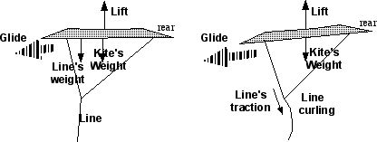
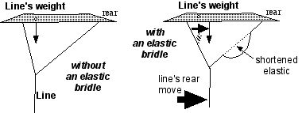
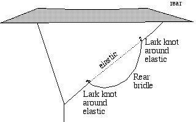

This elastic mounting just concerns, not necessary to tell you, the rear bridle.
Against a general thought, using it to elude too strong gusts is not very effective and not the only and most advantage, in any case not the one I want to insist on today. More useful for me is to prevent the "over the head" pass, which can occur in 2 cases :
if your kite trails really very little and effectively passes over your head once on the top of its window. This can be the result too of a thermic vertical "pump" which lifted it vertically ;
if your kite flies rather high and the wind stops, as it tends unfortunately to do especially when you are looking somewhere else.
Anyway, in that situation, a kite can have 2 tendencies on its own :
Tendency 1 : it starts gliding FORWARD, that is toward your vertical. Your line then slackens, and to get the situation back to hand, you must first rewind frenetically. That's what you generally prefer to avoid. Yet it can be passionating to imitate the birds and to spiral in the ascendancies. But pay attention to the following sequence, because after an ascendancy always come a descendancy (Nature hates Empty) and you will have to rewind quicklier again to get back control. These manoeuvres imply evidently that your line is near your hand, and not abandoned tied around a pole while its master is gone to the appetizer generously offered by the municipality.
Tendency 2 : it starts REARWARDS. So it pulls back on its line and will climb again if the wind comes back. Or it will fall quietly on its rump, with no loss of control and an immediate recover if you pull the line. If its shape does not let it turn on landing, it can even restart by itself if zephyr wakes up back (case of an arch).
Which tendency your kite will adopt depends simply of its longitudinal balance, that is the relative position of airlift center and gravity center (it is not so simple, it would be too easy, because the lift center varies according to the air flow, and kites generally have a nose-up momentum). But roughly, say that if the weight is more to the front, the kite will glide forward, and if it is more towards the tail the kite will start backwards.
Evidently to be in the second case, you can add some weight at the rear end of the kite. This seems a bit of a paradox, as usually you spend many efforts to make the beast lighter ! But you must not reject this solution a priori. For using it, in a reasonable manner, allows you to reduce drag on your kite (for instance through reducing camber or lessening tails) and you regain on aerodynamics what you have lost on global weight. In that way, it is recommended during design to choose solutions the armature's center of gravity of which will be further rear, or to be light on the forward reinforcements and generous with the rear ones.
But, where does the elastic bridle interfere with that ?
Well, if the wind weakens, your line tends to be vertical, and it pulls on the kite vertically at the place where it hangs. This effect is as more important as the line is thick (always too much, I know, you don't want to cut your fingers...) and as the kite is high (line is longer and heavier). In gentle winds, then, fly with a thin line ! You can even notice that if the kite starts to glide forward, the line curves even more and pulls to the rear because its weight but also of its own drag. This makes the things even worse : the dive increases, so does the speed, and the pull to the nose is stronger and more rearwards etc.

If you don't believe this effect is important, make a try in low wind with a rather diver kite and you will see the difference between a thin line and a bigger one.
And the elastic bridle ? If well set-up to this end, the elastic is pulled in normal flight, but, when the wind weakens and the line traction gets smaller, it pulls the bridle point rearwards. So the point of application of the line's weight gets rearwards and it always make the behavior of the kite better. I say not it is a miracle remedy but the effect is important enough to just fly and not struggle each minute to recover by pulling the line, I experimented it.

For implementation, I need to come back to the distinction I made when beginning :
If you want to use an elastic bridle to compensate the strong gusts, you need a strong elastic which will not be stretched out in normal use, but only on gusts ;
If on the contrary you want to avoid forward gliding, you need a long and thin elastic which will be stretched out in normal flight, and only shorten if wind weakens under the force for a normal steady flight.
So, don't try to build a bridle which acts for both cases. Or, perhaps with 2 elastics, one for each desired effect, but that, I did not try and it becomes a little of a gas works.
Here we are. Implementation is generally simple, except the choice of the diameter of the elastic. It suffices to make 2 "lark knots" on the rear bridle between which the elastic will be put.

You don't have much to change to the set-up, except for the length consumed in the knots. The bridle must have slack between these points. This slack must just be stretched out in normal flight. Pay attention that when the slack is pulled, it be the line which will take the tension and not the elastic at its extreme point which would not last long in these conditions. Make some trials for the diameter and length of the elastic and for the slack's length but it is rather intuitive if you have well understood what I tried to explain. If not, say it's my fault.
OK, good flight in gentle winds, and if you have comments or complements, I will be happy to read you.